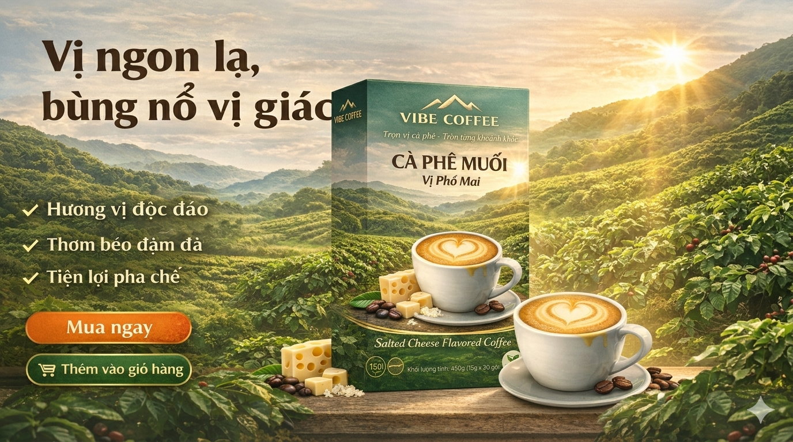

Tại VIBE COFFEE, chúng tôi tin rằng: cà phê không chỉ là một thức uống – mà là một “vibe” bạn cảm nhận mỗi ngày. Vì vậy, cà phê chuẩn vị Việt không chỉ là hương vị truyền thống, mà là cảm giác được tái hiện theo cách hiện đại, tiện lợi và dễ chạm cảm xúc hơn.
Chuẩn vị Việt – không chỉ là hương vị, mà là cảm giác
Một ly cà phê đúng “chuẩn vị Việt” thường có:
- Độ đậm vừa đủ để đánh thức năng lượng
- Hậu vị sâu, lưu lại cảm giác quen thuộc
- Hương thơm gợi nhớ những buổi sáng rất “Việt Nam”
VIBE COFFEE không cố gắng làm cà phê “khác đi”, mà tập trung: giữ đúng cái chất – nhưng nâng cấp trải nghiệm.
Từ hạt cà phê Việt đến ly cà phê đúng “vibe”
Mỗi ly cà phê VIBE bắt đầu từ:
- Hạt cà phê Robusta & Arabica chọn lọc
- Vùng trồng phù hợp khí hậu Việt Nam
- Quy trình rang xay tối ưu hương vị
Nhưng điều tạo nên khác biệt không chỉ là nguyên liệu, mà là cách chúng tôi xây dựng trải nghiệm người uống:
- Dễ pha
- Dễ uống
- Vẫn giữ được chất cà phê thật
Khi cà phê truyền thống gặp trải nghiệm hiện đại
“Chuẩn vị Việt” ngày nay không còn bị giới hạn trong ly cà phê phin. Với VIBE COFFEE, bạn có thể:
- Uống cà phê chỉ trong 10 giây
- Mang đi bất cứ đâu
- Thưởng thức theo cách riêng của mình
Dù là một buổi sáng vội vã, một buổi chiều cần tỉnh táo hay một tối chill nhẹ — VIBE COFFEE luôn hướng đến đúng cảm giác bạn cần.
Cà phê là khoảnh khắc
Chúng tôi không chỉ bán cà phê. Chúng tôi tạo ra những khoảnh khắc:
- Một mình nhưng không cô đơn
- Làm việc nhưng vẫn có cảm hứng
- Trò chuyện nhưng thêm kết nối
Highlight: Một ly cà phê ngon không nằm ở công thức, mà nằm ở cách nó khiến bạn cảm thấy.
VIBE COFFEE – không chỉ là cà phê, là trải nghiệm
Chúng tôi bắt đầu từ một câu hỏi: “Làm sao để cà phê hòa tan vẫn mang lại cảm giác như tại quán?”
Và câu trả lời là: tối ưu nguyên liệu – cân bằng công thức – thiết kế trải nghiệm, để mỗi sản phẩm không chỉ “ngon” mà còn mang một vibe riêng.
Kết
“Chuẩn vị Việt” không phải là thứ cố định. Nó là cảm giác quen thuộc – được tái hiện theo cách mới. Và tại VIBE COFFEE, chúng tôi đang làm điều đó mỗi ngày: giữ chất Việt – nâng tầm trải nghiệm – tạo vibe riêng cho bạn.
Bài liên quan: Cà phê hòa tan là gì? Bí quyết chọn loại ngon cho gia đình
Internal link: /san-pham • /ve-chung-toi
External link (nofollow placeholder): https://example.com